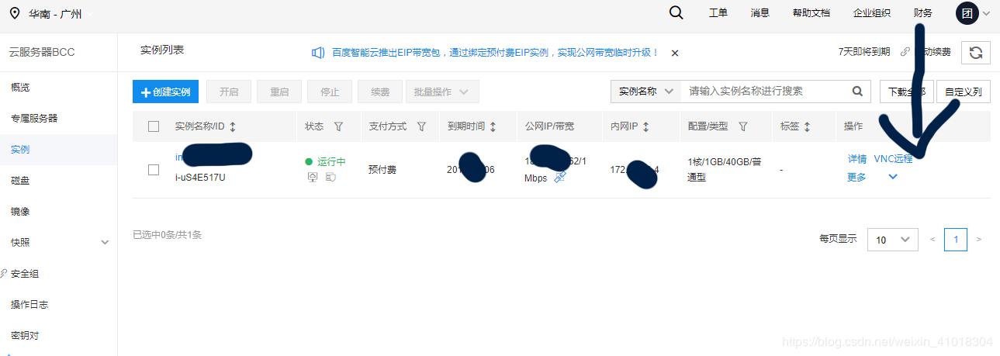
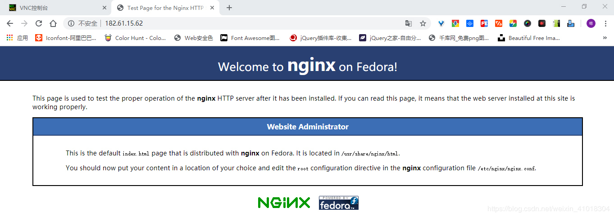
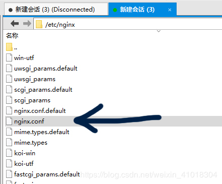
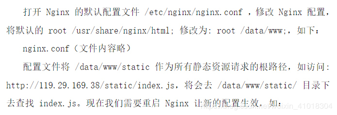
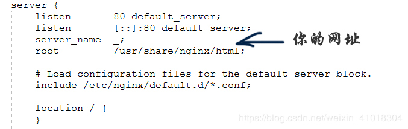
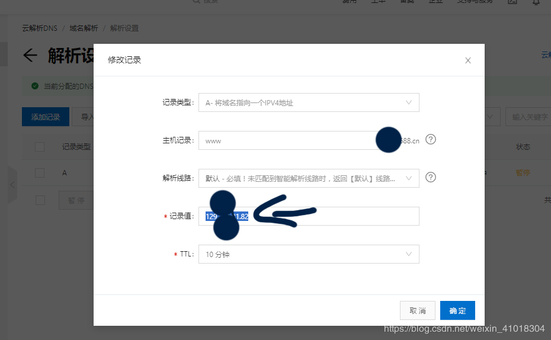
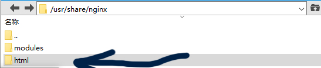
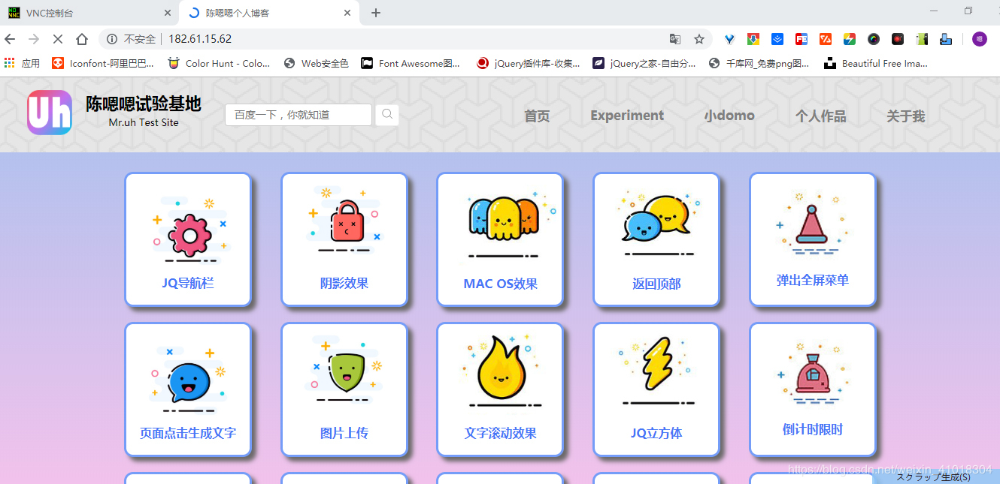

买东西一般都很方便的给钱就行。。。
百度，腾讯，阿里都可以买，而且只要给钱，啥东西都给的明明白白。
这里我就不细说了。个人推荐百度的。因为我就是用这个的。

找到自己买的实例，打开VNC控制台
输账号密码（账号一般都是root）
密码就是会通过邮件给你，你可以自己改。
下一步进入界面（centOS界面和linux的很像，操作起来很方便）
输入：yum install nginx -y
（忘了截图了，此处有个黑色背景的linux界面图）
下载安装成功后，就去试试行不行
在网页上打你的公网ip！
有这图说明成了。↓

后面看这个
文件地址为：（软件为Xftp5，其他ftp一样可以用的,登陆的方法就打个密码和账号，不细说了）

保存nginx.conf文件来修改一下。后面看这个

nginx.conf修改的:

域名解析很简单：（买的东西一般操作都不难）

找一下自己网址的目录

html就是你的网站的根目录，直接吧网址放进去，搞定
现在的网站属于静态网站，没有数据交互，只属于一个观赏性的网站！！
之前做的静态网站：

这个我后面有时间另写一篇。如果对你有帮助的话，点个关注和赞呗。